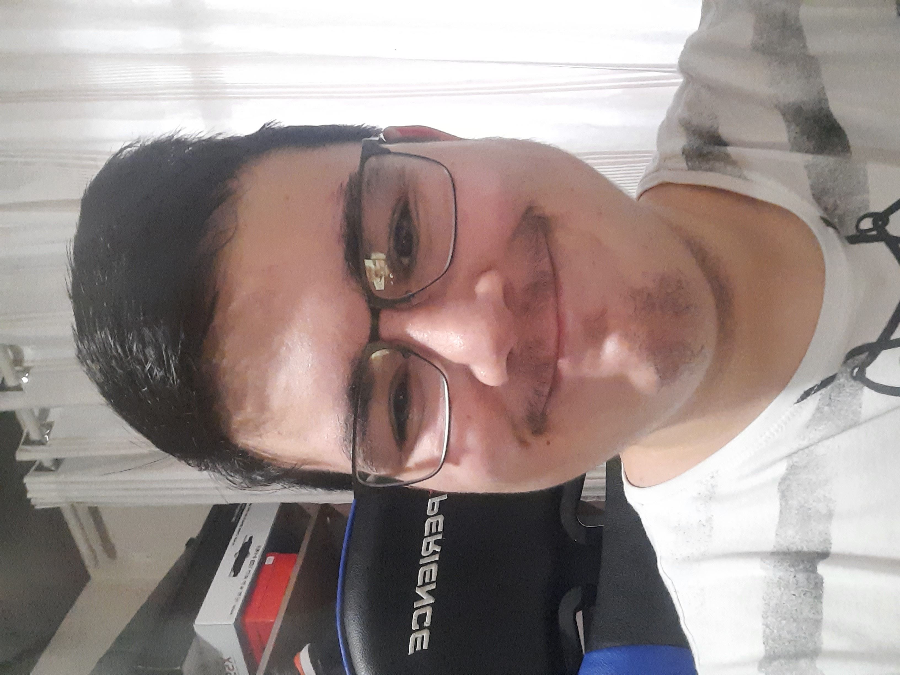

contratando alguém para estágio em programação? Me chame!
Olá a todos! Sou Gabriel Vinicios de Oliveira, e estou disponível em ser contratado como estagiário!
antes de dar continuidade, devo dizer que eu sinto muito pela má qualidade do site, pois meu conhecimento em PWA não é dos melhores.
sobre meu conhecimento:
o que eu já fiz: